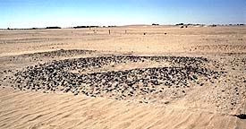

|
In the central
room flanking the doorway to the east we have only glimpsed the
well preserved paintings, perhaps symmetrical scenes of the king
striding towards the door at each side of which, on a broad yellow
painted vertical bank, is a fine hieroglyphic inscription which
has yet to be deciphered. On the north wall are again a frieze of
gods, one is recognisable on account of his skin being painted bright
blue, a convention used to represent the god Amun (Plate 11).
|
| 11.
Pippa Pearce from The British Museum conserving the wall paintings.
|
|
|
A fine painting
of a winged sun disc flanked by uraei decorated the lintel above
one of the doors (Plate 12). The excavation of these rooms was continued
in 2001-2.
|
| 12.
Painting of a winged sun disk flanked by uraei from the lintel
over a doorway. |
|
|
Three metres
outside the building on its main axis was another altar, this time
of mud brick which was perfectly preserved and remains of the last
sacrificial fire still remained in place on its top. Outside the
buildings was a mass of pottery and faience objects (Plate 13).
|
| 13.
A fine spacer from a three-strand necklace with representations
of nine udjat eyes (the Eye of Horus). |
|
|
Mud bungs used
to seal the mouths of ceramic vessels along with seal impressions
on mud (Plates 14 & 16).
|
|
| 14.
Ceramic refuse by the shrine. |
|
16.
Seal impression on mud from the rubbish deposits
adjacent to the shrine. |
|
|
Clearly the
building with its royal associations was of considerable importance
and was a centre for the collection, and presumably redistribution
of commodities on a large scale. Of particular interest was the
discovery of parts of at least four large ceramic statues, two of
which are of the god Bes and the goddess Beset (Plate 15).
|
| 15.
Ceramic statue of the goddess Beset found in the shrine. |
|
| The
Cemetery |
|
|
Over 1000 tomb
monuments have been recognised in the main cemetery and these include
tumuli, circular mounds of earth covered in pebbles or stone fragments
(Plate 17), mud-brick pyramids or mastaba, mastaba of irregular
blocks of stone, and possibly pyramids of dressed sandstone blocks.
Many different grave types have been recorded. The classic Kushite
grave type consists of a long stepped passage leading down into
the alluvium. At the end of the passage 3-4m below the surface an
`arch'-shaped doorway leads into a cave excavated in the alluvium.
The best preserved of these graves contained the burial of a female
placed on her back with the arms alongside the body. The body was
set on a wooden bed or bier, the legs of which were set in holes
in the ground. She wore copper-alloy rings on her toes and has a
scarab seal at the waist. Alongside the body were four large and
painted pottery vessels (Plate 18), a copper-alloy bowl and a copper-alloy
object which may be the handle perhaps of a mirror or fan. After
the deceased was placed in the tomb the doorway was blocked by a
wall of mud brick and the passageway was refilled with earth. The
tomb monument stood over the site of the tomb on the ground surface.
|

| 17.
Tumuli covered in black stone fragments in the eastern cemetery,
Site R18, at Kawa. |
|
| Many
graves have been re-used on several occasions. For the second use
the bones of the original occupants were often unceremoniously pushed
to one side and the new burial placed in the centre of the tomb. Later
burials lay on earth which had already covered the previous burial.
After each reuse the doorway was again blocked and the passage way
refilled. Burials were also placed in simple long narrow pits, often
dug into the fill of the passageways of earlier tombs. The most unusual
grave of this type, dug into the top of a tumulus, contained all the
bones of an adult female and an adolescent neatly piled together at
one end of the long grave, the rest of the grave being empty. In another
grave there was an additional human skull and a few other bones, the
significance of which is unclear. |
| 18.
A tomb of the 1st century BC - 1st century
AD in the eastern cemetery, Site R18, at Kawa. |
|
|
The recent work
is doing much to provide us with a fuller picture of life on the
Nile at Kawa 2000 and more years ago. The proportion of the site
excavated today is very small yet we can begin to trace the history
of the town and to document the lifestyle of the inhabitants. The
general picture is one of affluence. The houses are well built,
there is abundant pottery and fine quality jewellery, and the general
health of the population looks to have been high. It is hoped that
further work will continue to amplify our knowledge of this major
ancient city in Northern Sudan.
The excavations
directed by Griffith were published by M. F. Laming Macadam as The
Temples of Kawa. I. The Inscriptions. (London. 1949) and The
Temples of Kawa. II. History and Archaeology of the Site. (London.
1955). Preliminary reports on the recent excavations are published
in Sudan & Nubia, the bulletin of the Sudan Archaeological
Research Society. For the context of the site in the Kushite period
see Welsby, Derek A. The Kingdom of Kush. The Napatan and Meroitic
Empires. London. 1996. The report on the Northern Dongola Reach
Survey, Life on the Desert Edge. Seven Thousand Years of Settlement
in the Northern Dongola Reach, Sudan (Sudan Archaeological Research
Society Publications no. 7, London) is in press.
|
|